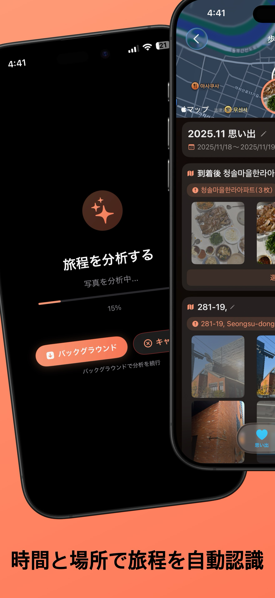
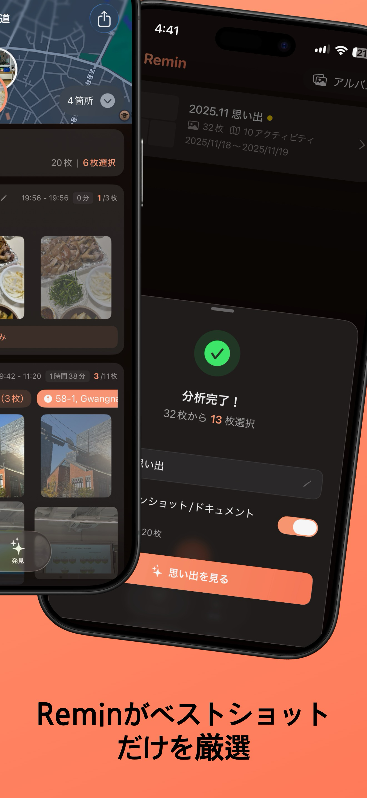
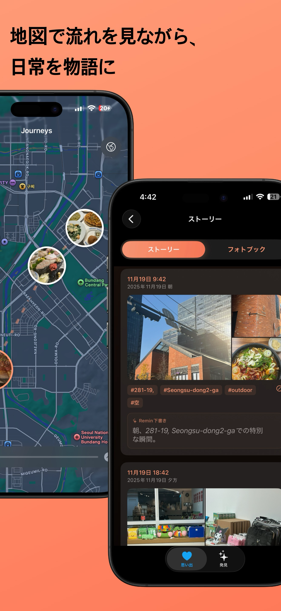
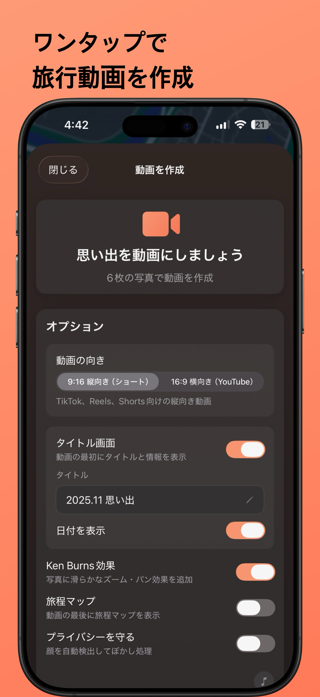
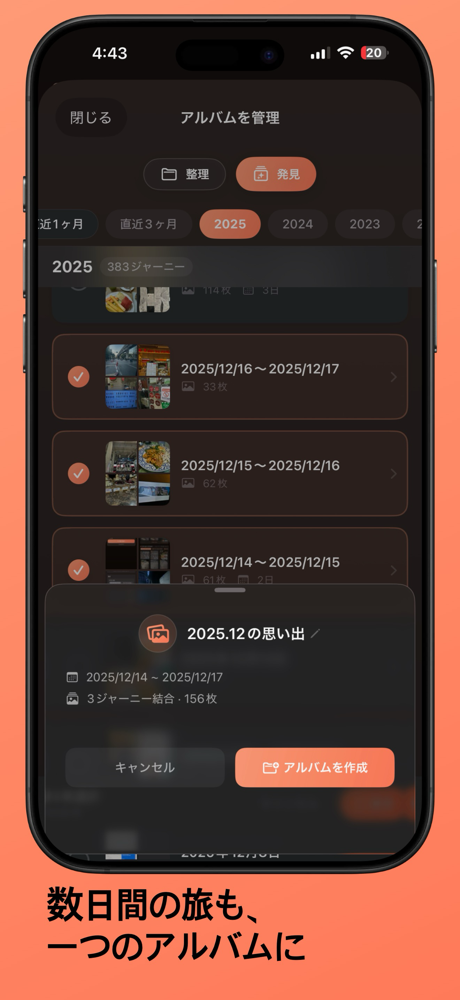
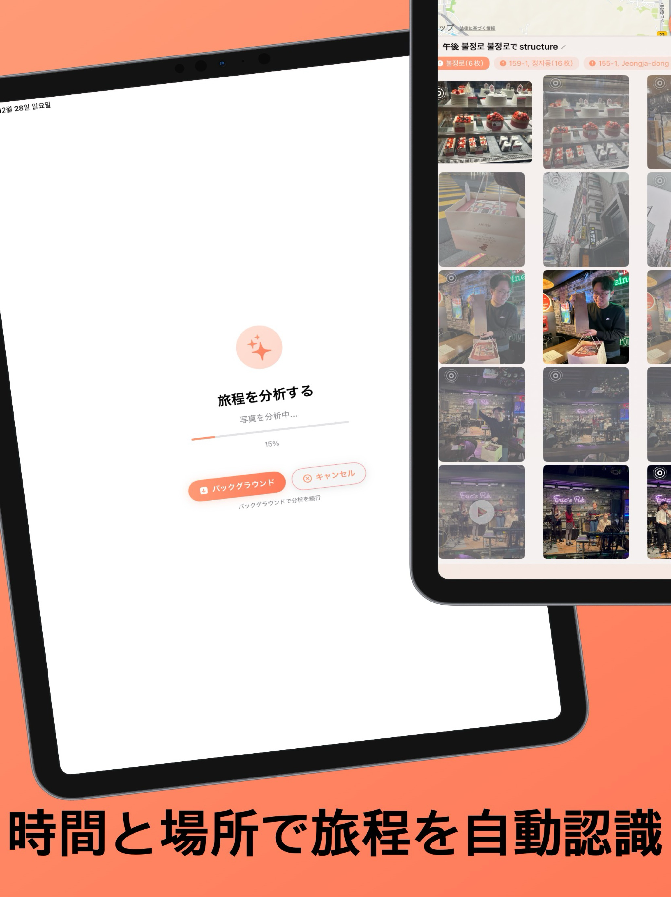
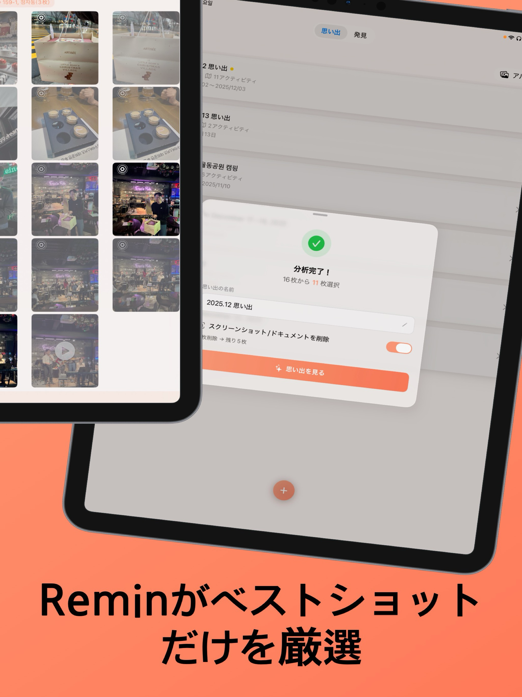
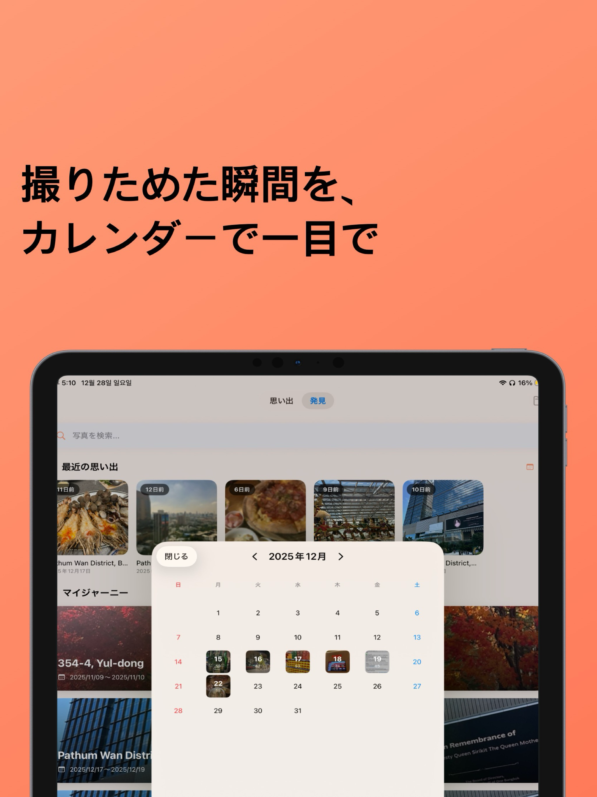
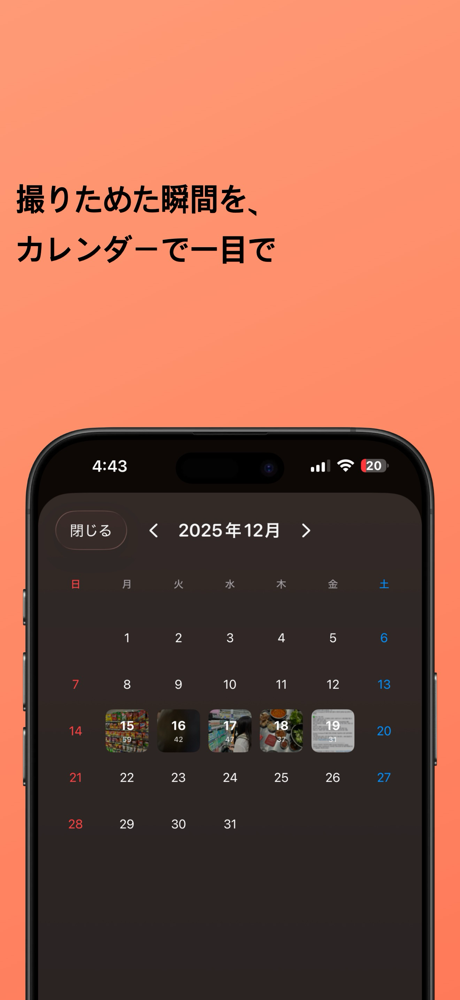

思い出の保存、ボイスメモ、場所のショートカットをApple Watchから使えます。
写真・場所・時間をもとに、デバイス内のAIが旅の物語を提案します。
「路地」「夕暮れ」「市場」のような自然な言葉を、意味タグで理解します。
大量のライブラリでも滑らかに。初回分析の時間を自社計測で約15%短縮しました。





大画面で旅の瞬間をより深く楽しめます



スマートフォンがポケットにあるときの、ふとした瞬間に
いま見ている光景を手首から保存すると、iPhoneの旅程に加わります。
その場所の感じを話して残すと、デバイス内で文字に変換されて地点に紐づきます。
場所とそこで必要なQR（交通パス、クーポン、会員コード）を登録しておけば、到着時にウォッチが表示します。
時間→GPS→視覚的類似度→品質。
4つの基準でベストショットを自動選別。
移動ルートと共に
その場所での思い出を地図上に展開。
旅行写真から
シネマティック動画を自動生成。

カレンダーで日付ごとの写真を閲覧し、
1年前の同じ日を振り返ります。
旅行写真が入った
アルバムを選択。
Reminが時間と場所を
分析して整理。
完成したあなただけの
旅行記を楽しむ。
iPhone・iPad対応（Mac互換）・オンデバイス処理